簡介
TI 15.4-Stack Linux SDK 示例應用程序可幫助開發人員創建超低功耗的超遠程星形拓撲網絡解決方案。TI 15.4-Stack Linux SDK 包括收集器和網關示例應用程序（還包括其他內容；有關更多詳細信息，請參閱 TI 15.4-Stack 嵌入式開發人員指南）。Linux 收集器示例應用程序通過 UART 與充當 MAC 協處理器 (CoP) 的 CC13x0 LaunchPad™ 建立連接。收集器示例應用實現了執行網絡 PAN 協調器（啟動網絡並允許設備加入該網絡）功能的全功能設備，並且還提供監視和收集一個或多個傳感器設備中傳感器數據的接口。此外，連接器網關示例應用程序還提供了一個連接 Linux 網關應用的套接字服務器接口。
Linux 網關應用通過 NodeJs 框架實現，可作為客戶端連接到 Linux 收集器創建的套接字服務器。此應用隨後可建立本地 Web 服務器，用戶可通過 Web 瀏覽器連接到此服務器以監視和控制網絡設備。收集器和網關示例應用程序共同構成到 IP 橋的完整 IEEE 802.15.4，這是創建基於 TI 15.4-Stack 的物聯網 (IoT) 應用的良好開端。
本實驗使用預生成的二進制文件，因此無需執行編碼和生成等操作。它提供有詳細的說明，可幫助開發人員樹立和理解該基於 Linux 收集器的星形網絡傳感器的工作演示所體現的原則。
任務 1：準備傳感器
任務 2：準備 MAC 協處理器
任務 3：安裝 TI 15.4-Stack Linux 網關 SDK
任務 4：準備主機
任務 5：運行和使用解決方案
技術支持
若存在任何疑問，請參閱相關的 E2E 論壇 - TI 低於 1GHz E2E 論壇
支持的設備/SDK
本實驗可與以下各個 IT 設備的最新 SDK 配合使用：
| TI 器件 | SDK 版本 | 運行模式 |
|---|---|---|
| CC1310 | CC13x0 SDK v1.60 | 低於 1GHz TI 15.4-Stack |
| CC1350 | CC13x0 SDK v1.60 | 低於 1GHz TI 15.4-Stack |
| CC1312 | CC13x2 SDK v1.60 | 低於 1GHz TI 15.4-Stack |
| CC1352 | CC13x2 SDK v1.60 | 低於 1GHz TI 15.4-Stack |
注意
此版本不支持 2.4GHz 運行/CC26x2
先決條件
知識背景
執行本實驗需要具備基本的 Linux 知識。
軟件
- UniFlash
- 上面列表中的對應 SDK
- TI 15.4-Stack Linux 網關 SDK 2.2.0 或更高版本（將在下面的任務 3 中進行設置）
- BeagleBone Black 的 PROCESSOR-SDK-LINUX-AM335X SD 卡映像 v. 03.02.00.05（僅限於使用嵌入式主機 - 參閱下面的任務 4)
- Tera term 或任何其他等效的終端程序
硬件
- 2 塊兼容的 LaunchPad，請參閱 支持的設備/SDK 部分
- 2 條 USB 線纜
- 有線網絡訪問（即具有可用以太網連接的 Wi-Fi 路由器）
- 以下主機平台之一：
- 嵌入式主機平台
- BeagleBone Black 修訂版 C（其他版本的 BBB 也可能兼容，但尚未進行測試）
- 兼容的 5V 電源適配器
- 以太網電纜
- TTL-232R-3V3 通過 USB 連接 FTDI 出品的 TTL 系列電纜，亦稱為 FTDI 電纜（可選）
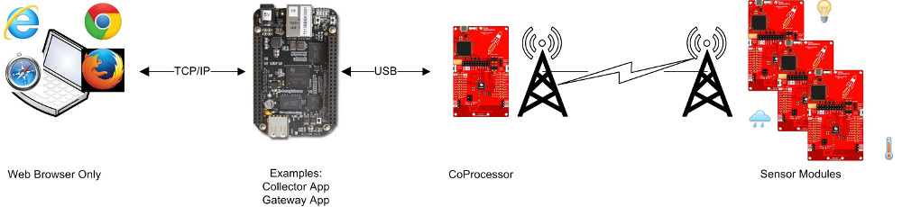
- 電腦主機平台
- 已連接到本地網絡且運行 ubuntu 的電腦或虛擬機
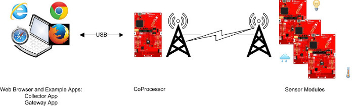
- 已連接到本地網絡且運行 ubuntu 的電腦或虛擬機
- 嵌入式主機平台
- 運行 14.04 64 位 ubuntu 的電腦或虛擬機（必需，使用嵌入式主機時也是如此），用於從 Linux SDK 安裝程序提取預編譯的網關二進制文件（其他版本的 Linux 也可能兼容，但尚未進行測試）
- Windows 電腦，用於運行 SmartRF Flash Programmer 2 和安裝 SimpleLink CC13x0 SDK
兩個主機平台選項
TI 15.4-Stack Linux 網關與嵌入式主機 (BeagleBone Black) 和電腦主機（請參閱上文的硬件先決條件）開箱即可兼容。
使用電腦主機可以提供更易於使用的開發和調試功能。如果已擁有可用的 ubuntu 電腦或虛擬機，它們還可以加速啟動過程，因為此時無需重新安裝主機環境。此外，儘管將 BeagleBone 用作主機可能需要執行額外步驟來對其進行設置，但它可提供更真實的環境並且與嵌入式目標產品更為接近。
注意
可使用任何 CC13xx LaunchPad 執行本實驗。培訓資料以 CC1350 為例，因此，如果您使用的是 CC1310/CC1312/CC1350，文本和屏幕截圖中所有涉及 CC1350 的內容均應以您所使用的具體電路板型號為準。
任務 0：對 LaunchPad 進行標記
1.根據 此處 的介紹，用相應的 XDS 設備 ID 對每塊 LaunchPad 進行標記。
- 此外，將其中一塊 LaunchPad 標記為
傳感器，將另一塊標記為MAC-CoP。本實驗將多次提到這些標記。建議為此使用非永久性標記（如便利貼），因為這些標籤可能僅適用於本次實驗。
任務 1：對傳感器LaunchPad 進行編程
1.假設您已安裝了受支持設備列表部分中的對應 SDK。如果未安裝，請現在進行安裝。
將
傳感器LaunchPad 連接到 Windows 電腦。運行 UniFlash 並執行以下步驟：
Uniflash 會自動查找已連接到您的電腦的任何 LaunchPad：
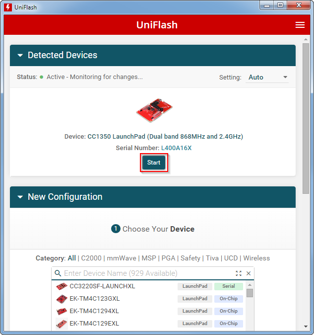如果有多個 LaunchPad 連接到該電腦：
請確保在對固件進行編程時選擇正確的 LaunchPad：將在任務 0 中寫入 LaunchPad 上的 XDS 設備 ID 與上面圖像的序列號字段中顯示的設備 ID 進行對比。
轉到 Uniflash 中的
Settings & Utilities選項卡，擦除所有受保護的部分：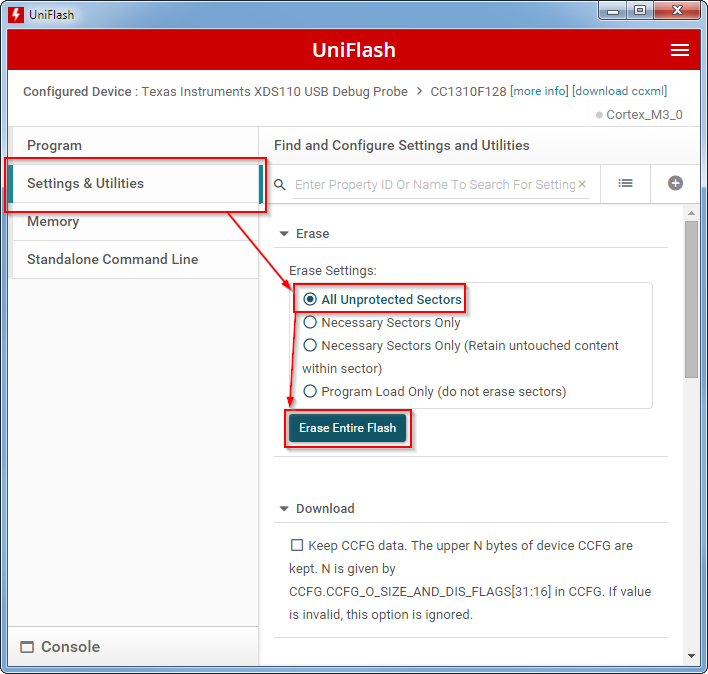對設備進行編程前，將擦除設置改回
Necessary Sectors Only (Retain untouched content within sector)，如下所示：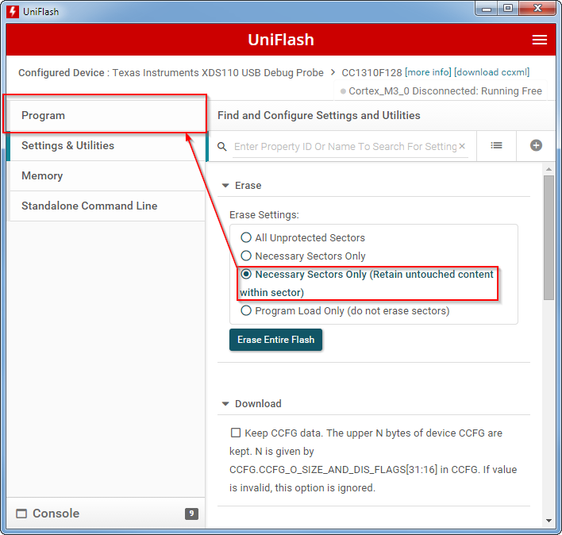在 Program 選項卡中的 Flash image(s) 下，瀏覽到預生成的傳感器十六進制文件，其位置為：
C:\ti\<sdk_path>\examples\rtos\<your_target_board>\ti154stack\hexfiles\default\sensor_<your_target_board>_default.hex其中
<sdk_path>與 SDK 相對應，<your_target_board>與用於此實驗的 LaunchPad 相對應。確保首先 Load Image，然後 Verify Image
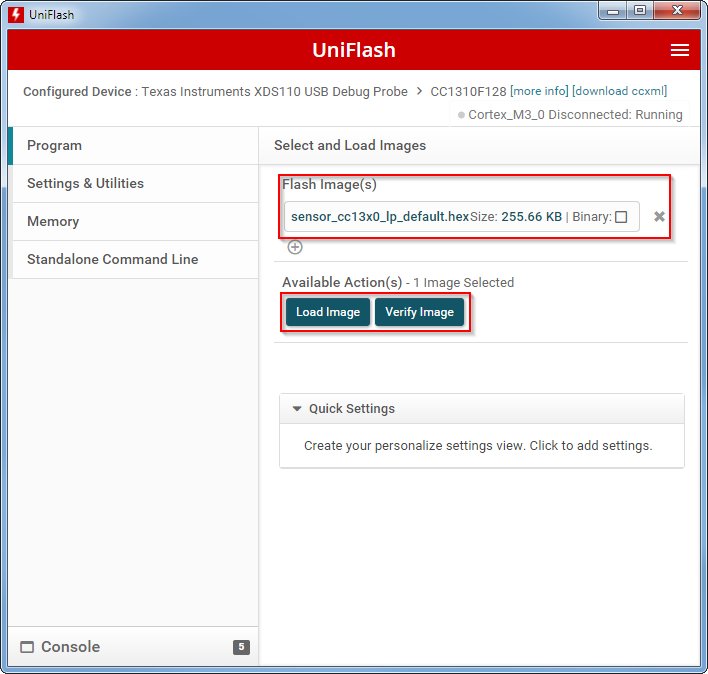
任務 2：對MAC-CoPLaunchPad 進行編程
1.按照上面的步驟並使用位於以下位置的對應十六進制映像對MAC-CoPLaunchPad 進行編程：
C:\ti\<sdk_path>\examples\rtos\<your_target_board>\ti154stack\hexfiles\coprocessor_<your_target_board>.hex
其中 <sdk_path> 與 SDK 相對應，<your_target_board> 與用於此實驗的 LaunchPad 相對應。
任務 3：安裝 TI 15.4-Stack Linux 網關 SDK
1.將 TI 15.4-Stack Linux 網關 SDK 下載到 ubuntu 14.04 計算機。SDK 軟件包以 Linux 可執行文件的形式提供，名為 ti15.4stack_linux_x64_x_xx_xx_xx.run（x_xx… 將呈現為實際的版本號）。
為安裝程序分配執行權限，然後開始執行：
chmod +x ti15.4stack_linux_x64_x_xx_xx_xx.run ./ti15.4stack_linux_x64_x_xx_xx_xx.run運行網關 SDK 安裝程序
按照安裝程序說明，接受許可協議，然後選擇目標路徑以將 SDK 內容提取到 Linux 文件系統。等待安裝程序完成安裝。
任務 4a：準備嵌入式主機
此任務介紹了將 BeagleBone Black 設置為 TI 15.4-Stack Linux 網關的嵌入式主機的完整過程。如果使用 ubuntu Linux 電腦（或虛擬機）而不是 BBB 作為主機，請跳過此任務並直接進入下一任務。
以不同方式執行任務
下面的某些任務可在 Windows 或 Linux 電腦上執行（請不要與前文討論的主機平台混淆，此處討論的是執行此實驗所使用的電腦）。為簡單起見，對於此類任務僅提供面向 Windows 的詳細說明。如果您可以熟練地在 Linux 電腦上執行某些任務並且更願意這樣做，那就請大膽嘗試吧！
按照如下步驟使用處理器 SDK 映像對 SD 卡進行編程，此操作可在 Windows 或 Linux 計算機上完成：
下載預生成的 TI 處理器 SDK SD 卡映像文件，am335x-evm-linux-03.02.00.05.img.zip
按照以下說明並使用上述映像對 microSD 內存卡進行編程：
對於 Windows 的說明，請參照 此 wiki
對於 Linux 的說明，請參照 此 wiki
將 FTDI 電纜連接到 BeagleBone 上的接頭 J1 - 黑線應與用點標記的引腳進行連接。
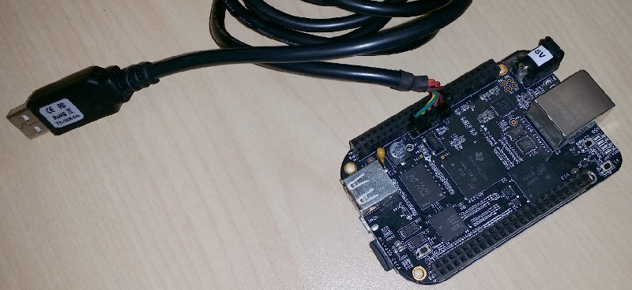將 FTDI 電纜的 USB 連接器連接到 Windows 電腦。
FTDI 電纜應作為串行設備進行自動枚舉。如果未自動枚舉，請安裝所需的驅動器。
在該電腦上運行終端程序（如 Tera Term）並將其連接到 FTDI 電纜的串行端口。將其配置為使用 115,200kbps、8 個數據位、無奇偶校驗、1 個停止位、無流量控制。
使用新準備好的 SD 卡啟動 BBB：
確保沒有 FTDI 電纜以外的其他線纜連接到 BBB（如電源、USB）。
使用以太網電纜將 BBB 連接到您的網絡
將 SD 卡插入 BBB
按住引導選擇按鈕（在 SD 卡插槽旁）。注意，該啟動按鈕僅在初始通電時可見，執行其他類型的重置時不可見：
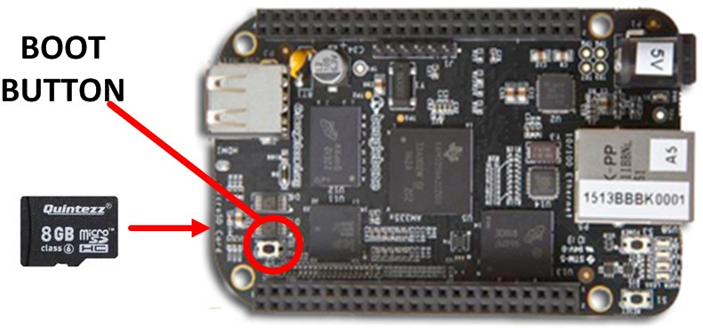按住啟動按鈕的同時，為 BBB 接通 5V 電源
等待幾秒，然後鬆開啟動按鈕。LED 應在 5 至 15 秒後開始閃爍。
請耐心等待 :-)
通過新格式化的 SD 卡第一次啟動時，需要 1 至 2 分鐘或更長時間，在這段時間內，BBB Linux 發行版會執行某些一次性步驟。
BBB 啟動並運行後，您應看到 Arago Project 歡迎消息和輸入用戶名稱的提示。鍵入用戶名稱 root 並按 Enter。
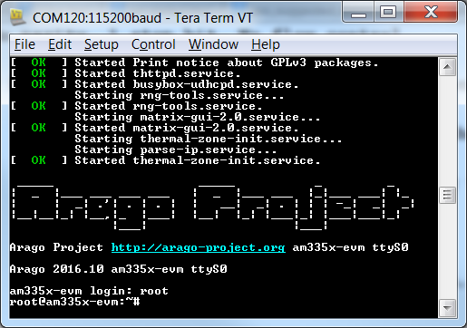使用 ifconfig 命令獲取分配給 BBB 用於進行以太網連接的 IP 地址（您將需要此地址向 BBB 傳輸文件和打開其他終端窗口）：
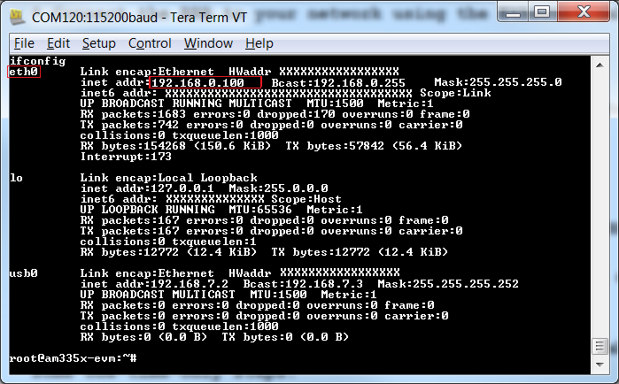打開另一個終端窗口，並將使用 SSH 的 BBB 連接到上文獲取的 IP 地址。使用用戶名稱 root，無需密碼。關閉之前的終端窗口（通過 FTDI 電纜進行連接）。
為什麼？
通過 FTDI 電纜建立的控制台連接可提供一些額外級別的調試跟蹤，這在開發期間較為有用，但可能會降低用戶交互的舒適體驗。
從在任務 3 中安裝的 Linux 網關 SDK 中找到文件 bbb_prebuilt.tar.gz。此文件位於 SDK 主文件夾下的 prebuilt 目錄下（默認情況下，SDK 會提取到 ~/ti/simplelink/ti-15.4stack-x.xx.xx.xx）。
將 ubuntu 計算機上的此文件複製到 BBB 文件系統 - 還可以使用 USB 拇指驅動器執行此操作。或者，如果 BBB 和 ubuntu 計算機（已安裝網關 SDK）位於同一網絡，您可以通過在 ubuntu 計算機上執行以下命令來使用 scp 傳輸該文件：
首先，將工作目錄更改為該文件所在的目錄，然後調用 scp（將 <bbb-ip-address> 替換為 BBB 的實際 IP 地址）：cd ~/ti/simplelink/ti-15.4stack-x.xx.xx.xx/prebuilt scp bbb_prebuilt.tar.gz root@<bbb-ip-address>:/home/root/將預生成的文件複製到 BBB
在 BBB 上，通過執行以下命令提取 bbb_prebuilt.tar.gz 文件
cd ~/ tar -xvf bbb_prebuilt.tar.gz提取預生成的內容
任務 4b：準備電腦主機
如果使用 BeagleBone Black 作為主機，請跳過此任務並直接進入下一任務。
假設以標準用戶身份而不是 root 登錄 ubuntu 電腦，您需要執行以下命令來獲取串行端口（用於與 LaunchPad 進行通信）的訪問權限：
sudo adduser $USER dialout允許訪問 LaunchPad 的串行端口
為使上述命令完全生效，請在執行該命令後重置 ubuntu 電腦。
任務 5：運行和使用網關
本章節的主機一詞指 BBB 或 PC 主機。如需進行區分，文章中會提供明確說明。
將 MAC 協處理器連接到主機
使用 USB 線纜將
MAC-CoPLaunchPad 插入主機。如果使用嵌入式主機選項，視圖應如下所示：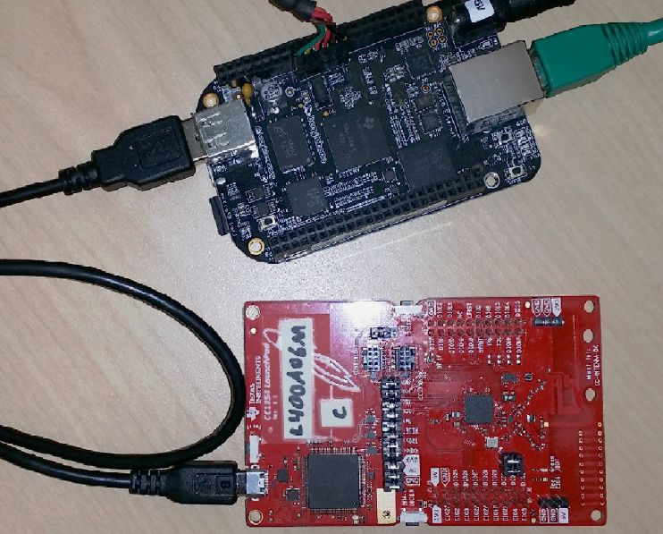等待幾秒鐘，然後通過在主機終端窗口中輸入以下命令來確認 LaunchPad 已作為 2 個串行端口成功進行枚舉：
ls –l /dev/ttyACM*驗證
MAC-CoP的枚舉是否正確運行是否正常
如果
MAC-CoPLaunchPad 已成功枚舉，您應看到如下輸出。如果未成功，請繼續閱讀文章以找到可能的解決方案。/dev/ttyACM0 /dev/ttyACM1成功的枚舉輸出
如果未成功應怎麼做？
如果插入
MAC-CoPLaunchPad 後未看到任何已枚舉的新串行端口，請再等待幾秒鐘，然後嘗試再次輸入上文的命令。
此外，LaunchPad 可能已使用其他串行設備名稱（如 /dev/ttyACM3）進行枚舉。如果是這種情況，您將需要更新網關配置文件，該文件默認為 /dev/ttyACM0。要執行此操作，請打開文件 prebuilt/bin/collector.cfg，找到 ttyACM0 並相應地更新此值。注意，LaunchPad 作為 2 個單獨的串行設備進行枚舉 - 請選擇其中後綴數量較少的設備。如果無法執行後面的步驟，請返回此步驟並改為嘗試另一個串行設備名稱。
啟動應用 – 開啟網絡
prebuilt 目錄包含一個名為 run_demo.sh 的簡單 shell 腳本，您僅需此腳本即可啟動並運行所有內容。
根據所使用的主機平台，在主機上更改工作目錄。如果使用電腦主機，請將 x.xx... 替換為實際的 SDK 版本號：
cd ~/prebuilt如果使用 BBB 主機
cd ~/ti/simplelink/ti-15.4stack-x.xx.xx.xx/prebuilt如果使用電腦主機
在主機上執行以下命令。rm 命令用於繞過任何預先存在的網絡配置，只有已在此 BBB 上運行過網關時才需要使用。sh 腳本可啟動 TI 15.4-Stack 網關和收集器應用。
rm bin/nv-simulation.bin ./run_demo.sh啟動 TI 15.4-Stack Linux 網關
預期結果
網關將會啟動並顯示一些指示性消息，然後它會恢覆命令提示符，同時繼續在後台運行。如果使用 BBB 主機，終端窗口將與下圖相似。如果使用電腦主機，除在控制台中有相似的軌跡外，Web 瀏覽器將自動打開並連接到收集器應用（在後文進行討論）。
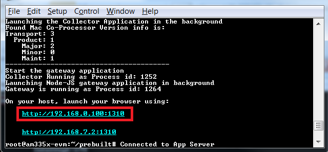注意，命令提示符顯示後，可能出現 Connected to App Server 消息（顯示幾秒鐘）。集成的 Web 服務器現可通過控制台軌跡中提供的鏈接進行訪問。如果使用電腦主機，Web 瀏覽器將自動打開並連接到此 Web 服務器。如果使用 BBB 主機，選擇可從電腦訪問的鏈接（具體取決於電腦的 IP 地址），打開電腦上的 Web 瀏覽器，在地址行中輸入此鏈接，然後按 ENTER。使用的鏈接應與之前使用 ifconfig 發現的 IP 地址相同，還應具有特定的端口號 - 1310。將鏈接複製到 Web 瀏覽器後，請確保鏈接的完整性（包括端口號）。如果未包含端口號，瀏覽器將默認為端口 80，這可能指向其他超出此實驗範圍的網頁。
預期外觀
Web 瀏覽器顯示的頁面應與下圖相似：
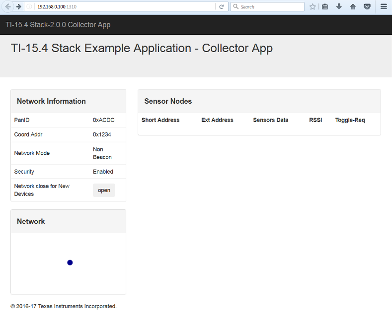修改網絡參數
請留意剛剛打開的網頁中的 PanID 值。通過編輯 prebuilt/bin/collector.cfg 文件，然後重啟 BBB 並重新運行網關（如上文所述），即可輕鬆更改此值、射頻通道、信標級數和其他與射頻相關的參數。
將傳感器設備添加到網絡
首次啟動網關示例應用程序時，Sensor Nodes 列表中不會顯示任何設備，並且網絡不支持加入，即網絡不接受新的設備連接。
將
傳感器LaunchPad 連接到可用 USB 供電端口或 USB 電源適配器。將傳感器節點重置為出廠默認設置：按住 Button 2，同時按住並釋放 Reset 按鈕，然後釋放 Button 2。重置後，傳感器設備將自動嘗試連接到可用網絡。
單擊網頁上的 Open 按鈕，為新設備打開網絡。傳感器將在幾秒後連接到網關/收集器
預期結果
傳感器LaunchPad 連接到網絡後，紅色 LED (DIO6) 將會亮起，Sensor Nodes 列表將顯示此新添加的設備。如果未連接...
...只需再次按
傳感器LaunchPad 的重置按鈕 - 此時無需按 Button 1 和 Button 2。
監視傳感器數據並發送控制命令
查看在 Web 瀏覽器中打開的 Web 界面。
傳感器數據報告
將新設備添加到網絡後，設備的短地址和擴展地址應出現在設備列表中。起初，數據字段應顯示為 —（連字符），表示沒有數據。1-2 分鐘後，還將顯示出傳感器讀取值（確切間隔需使用 #define 值在收集器應用中配置 - 有關詳細信息，請參閱 TI 15.4-Stack 嵌入式開發人員指南或 Linux 示例收集器源代碼）。自此開始，傳感器節點會定期向收集器報告傳感器數據，顯示內容也會相應更新。
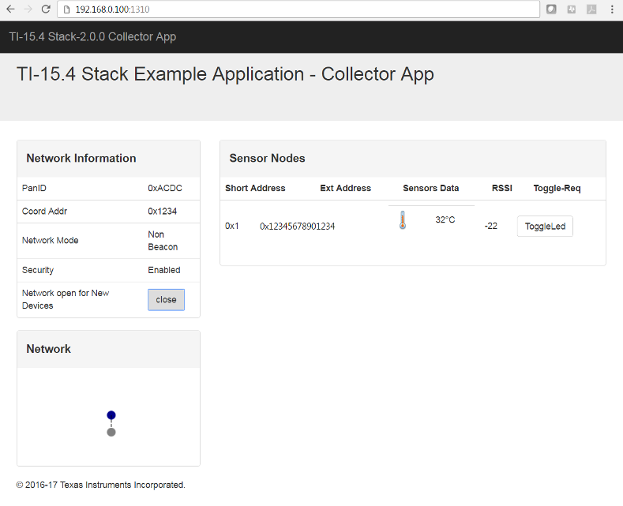單擊 Web 界面中的 Toggle LED 按鈕
通過網關與傳感器進行交互
單擊 Toggle LED 按鈕將向傳感器模塊發送消息以便切換 LED。成功切換 LED 前可能出現輕微延遲（最多幾秒鐘）。出現延遲的原因是：傳感器節點通常處於睡眠模式，僅在接收收集器緩存上的命令時定期喚醒。
最後說明
網絡信息和狀態由收集器（使用主機文件系統）和傳感器（使用內部刷寫）保存在非易失性存儲器中。這能確保這兩個設備可在週期供電後重新建立連接。 如果希望從頭重複執行任務 5，您需要按照上述實驗資料將收集器和傳感器重置為出廠默認設置（對於傳感器應組合使用按鈕，對於收集器應刪除文件 nv-simulation.bin）
想要深入瞭解？
本實驗以預生成的二進制文件為基礎。若要從頭生成和運行示例，請參閱 TI 15.4-Stack Linux 開發人員指南中的Linux 開發主機章節。
參考資料
TI 15.4-Stack wiki 頁面，網址：http://www.ti.com/ti154stack-wiki
CC13xx 軟件概述 – 請參閱 http://www.ti.com.cn/tool/cn/cc13xx-sw。
CC13xx 技術參考手冊 – 請參閱 此處